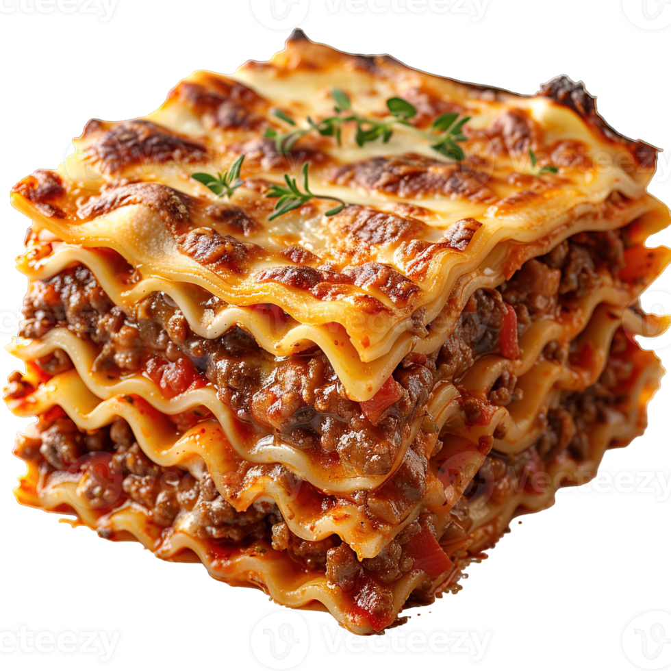

Home
Lasagna

Description
In this recipe, we'll be making an Italian classic: lasagna! This rich, tomatoey, cheesy,
stacked layers of goodness will leave you feeling full and your house smelling like the kitchen of an Italian
master chef. Well, hopefully. In this recipe, I will do my best to guide you through the process of making
this wonderful dish.
Ingredients
- 12 lasagna noodles uncooked
- 4 cups shredded mozzarella cheese divided
- ½ cup shredded Parmesan cheese shredded and divided
- ¾ teaspoon salt more to taste
Tomato Sauce
- ½ pound lean ground beef
- ½ pound Italian sausage
- 1 yellow onion diced
- 2 cloves garlic minced
- 36 ounces pasta sauce *see note
- 2 tablespoons tomato paste
- 1 teaspoon Italian seasoning
Cheese Mixture
- 2 cups ricotta cheese or cottage cheese
- ¼ cup chopped fresh parsley
- 1 large egg beaten
Steps
-
Preheat the oven to 350°F. Bring a large pot of salted water to a boil.
Add the lasagna noodles and cook until al dente (firm) according to package directions.
Drain, rinse under cold water, and set aside.
-
Meanwhile, in a large skillet or Dutch oven, brown the beef, sausage, onion,
and garlic over medium-high heat until no pink remains. Drain any fat.
-
Stir in the pasta sauce, tomato paste, Italian seasoning, ½ teaspoon of salt, and ¼ teaspoon of black pepper.
Simmer uncovered over medium heat for 5 minutes or until slightly thickened.
Taste and season with additional salt if desired.
-
In a separate medium bowl, combine 1 ½ cups mozzarella cheese, ¼ cup parmesan cheese,
ricotta, parsley, egg, and ¼ teaspoon salt.
-
Spread 1 cup of the meat sauce in a 9x13 pan or casserole dish.
Top it with 3 lasagna noodles. Layer with ⅓ of the ricotta cheese mixture and 1 cup of meat sauce.
Repeat twice more. Finish with 3 noodles topped with remaining sauce.
-
Cover with foil and bake for 45 minutes.
-
Remove the foil and sprinkle the top of the lasagna with the remaining 2 ½ cups mozzarella cheese
and ¼ cup parmesan cheese. Bake uncovered for an additional 15 minutes or until browned and bubbly.
Broil for 2-3 minutes if desired.
-
Rest for at least 15 minutes before cutting.
Notes
*Note on the sauce: In this recipe, each layer has about 1 cup of meat sauce.
If you prefer more sauce in your lasagna, increase the pasta sauce to 48 oz.
Salt needed may vary based on the brand of pasta sauce used.
Taste and season after simmering.
Cheese Layer: The cheese layers are thin; if you'd prefer a thicker layers cheese,
divide the cheese in half and put on the first two layers, and add just meat sauce to the third layer.
We tested this with extra ricotta cheese and found it overpowered the lasagna.
Time-Saving Tip: Use fresh lasagna sheets found in the deli area and skip the boiling step!
Fresh lasagna doesn't need to be boiled first.
Let the lasagna sit/rest for at least 15 minutes once removed from the oven (even 30-45 minutes is fine).
This will keep it from becoming runny and help it to keep its shape when cut.
Resting is not required when reheating.
Substitutions:
- Ricotta cheese can be replaced with cottage cheese.
-
Use all beef (or even ground turkey) in place of sausage if needed.
If using all beef, add ½ teaspoon Italian seasoning to the meat (and ¼ teaspoon fennel seeds if desired).
Link to original recipe!